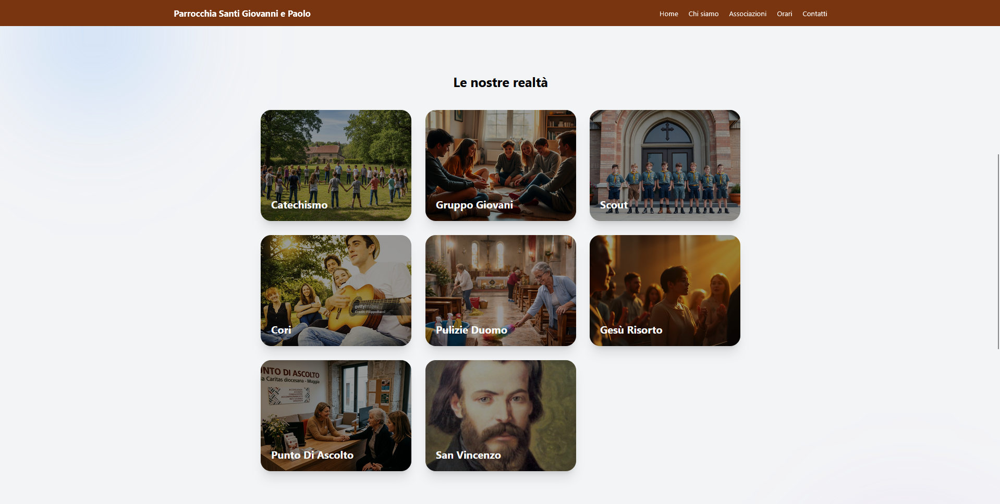
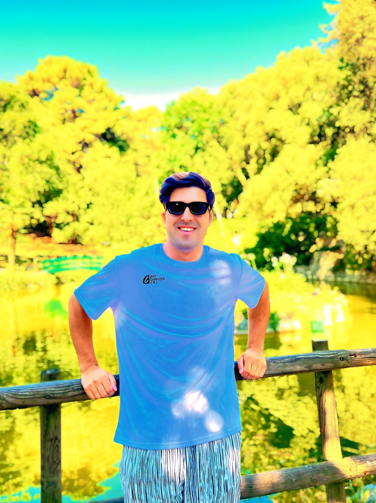

Cliccami per vedere le mie competenze!
🇵🇰 → 🇮🇹
Mi chiamo Numan Khan, ho 19 anni e vengo dal Pakistan. Vivo in Italia da un anno e mezzo e ogni giorno scopro qualcosa di nuovo — nella lingua, nella cultura e nel codice.
Mi sono iscritto al corso di programmazione informatica Digital Horizons, dove sto imparando a costruire siti web e applicazioni da zero.
Non ho ancora anni di esperienza professionale, ma sto già costruendo le prime cose reali. Il mio primo progetto è il sito della parrocchia Santi Giovanni e Paolo di Muggia, in provincia di Trieste.
Un luogo di fede, accoglienza e comunità, dove bambini, ragazzi e famiglie possono crescere insieme. Ho creato il sito per renderlo più visibile e accessibile online.

Sono arrivato in Italia con una valigia e tanta curiosità. In un anno e mezzo ho imparato l'italiano, fatto nuove amicizie e scoperto quanto è bella questa parte d'Europa.
Amo esplorare posti nuovi, scoprire culture diverse e stare in buona compagnia. Il Pakistan mi ha insegnato l'ospitalità, l'Italia il buon caffè.

Prova a passarci sopra con il mouse...
Hai trovato il mio messaggio segreto. Benvenuto nel lato oscuro del codice.
Vuoi imparare a programmare? Inizia da qui → deepweb://c0d1c3_d1_Numan.secret